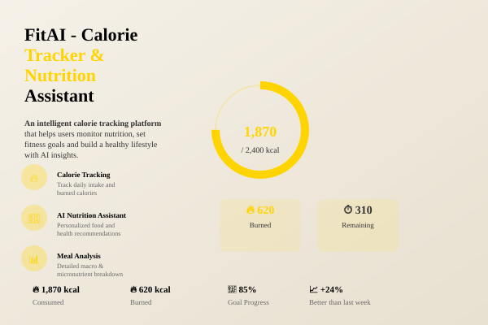

case study — 02 / 04
A nutrition-tracking API built around one idea: your calorie target shouldn't be static — it should adapt to what you actually ate yesterday.

Most nutrition trackers set one static daily target and leave it there, ignoring the fact that overeating on Monday should reasonably change your Tuesday. That mismatch is a big reason people abandon tracking apps within weeks.
The interesting part of this build wasn't the CRUD — it was encoding a behavioral rule (debt-adjusted targets) directly into the backend logic, so the API itself nudges users toward sustainable habits rather than rigid numbers.